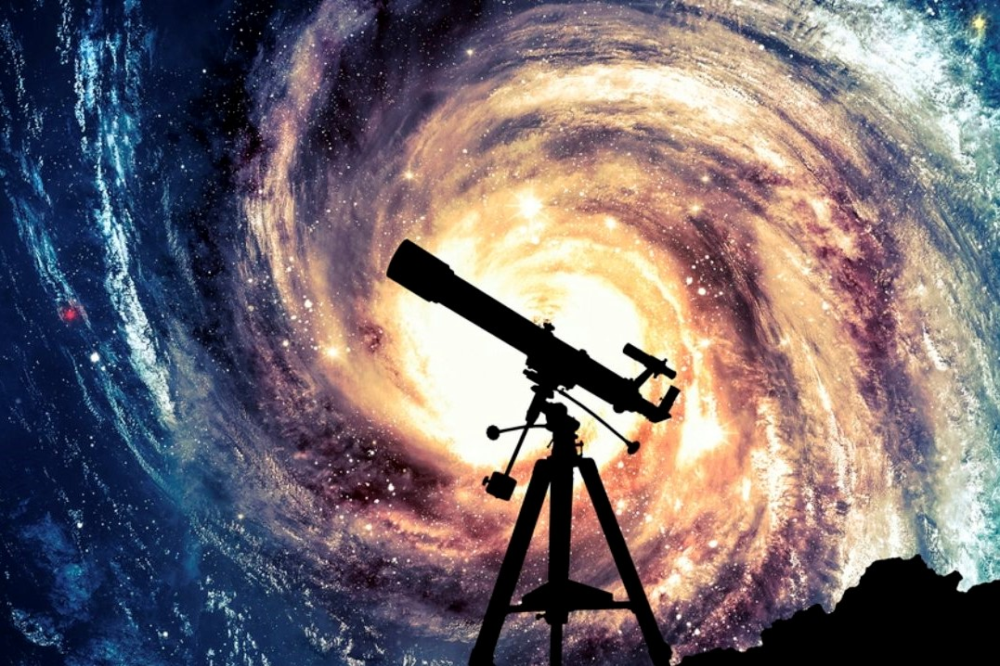

Summer of Science Projects 2017

Special Theory Of Relativity
Time, mass change with observer? Well, let's go through the very famous theory of special relativity with Abhijit Garg and find out what unsolved ambiguities gave rise to radical but most logical thinking which gave this theory right here.
Time, mass change with observer? Well, let's go through the very famous theory of special relativity with Abhijit Garg and find out what unsolved ambiguities gave rise to radical but most logical thinking which gave this theory right here.
How classical mechanics is linked to Quantum mechanics
The counterintuitive concepts of quantum mechanics have revolutionised our understanding of reality. Is Quantum Mechanics really a completely abstract concept or is does it arise from things we have known all along? Abhisek Sahu attempts to find the relations between classical mechanics and Quantum mechanics
The counterintuitive concepts of quantum mechanics have revolutionised our understanding of reality. Is Quantum Mechanics really a completely abstract concept or is does it arise from things we have known all along? Abhisek Sahu attempts to find the relations between classical mechanics and Quantum mechanics
Galactic Dynamics and Stellar Dynamics
How do stars form ?, What governs the motion of stars ?, What types of orbits do they move in ?, How do galaxies and stars evolve over time ?, What are the phenomenons observed when galaxies and stars interact ?, all these and more questions have been studied and answered in this report by Aditya Konale.
How do stars form ?, What governs the motion of stars ?, What types of orbits do they move in ?, How do galaxies and stars evolve over time ?, What are the phenomenons observed when galaxies and stars interact ?, all these and more questions have been studied and answered in this report by Aditya Konale.
Basic Astronomy
This report by Ajay Dangi gives a brief description about history of astronomy and the mathematics involved in astronomy.It also provides an introduction to calendars and star gazing for beginners.
This report by Ajay Dangi gives a brief description about history of astronomy and the mathematics involved in astronomy.It also provides an introduction to calendars and star gazing for beginners.